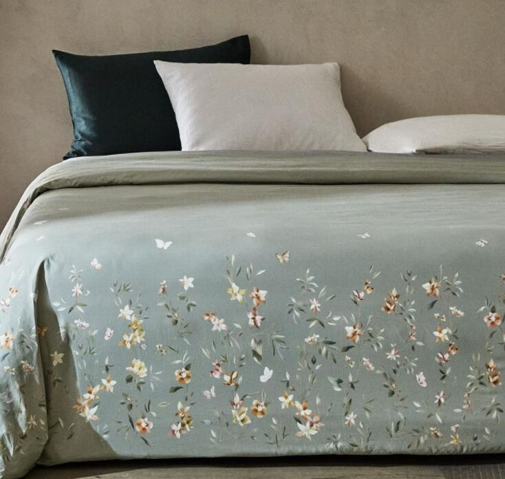

Después de las rebajas las firmas lanzan sus nuevas colecciones y es una delicia respirar ya aires de primavera en pleno febrero. Más colores, tejidos más frescos, flores... Zara Home también propone para tu dormitorio un soplo de primavera con su nueva colección de ropa de cama para esta estación llena de modelos florales. Ramas, florecillas silvestres, peonías, incluso delicadas mariposas, se entremezclan en un jardín único que llega dispuesto a vestir tu cama con un elegante colorido. De fondo, la paleta natural que tanto usa Zara Home, en una gama de beis, blanco roto y grises azulados... Incluso algún modelo se atreve con colores más oscuros como el gris antracita, sobre el que destacan muchísimo los diseños de florales. También nos han encantado las sábanas con print de flores que imita al peti point, como si fueran bordadas, creando un evocador y sugerente toque vintage a la ropa de cama. Todas las sábanas y fundas de Zara Home de esta colección están realizadas en algodón cien por cien, percal de 200 hilos, cuya trama es más delicada y de tacto suave.